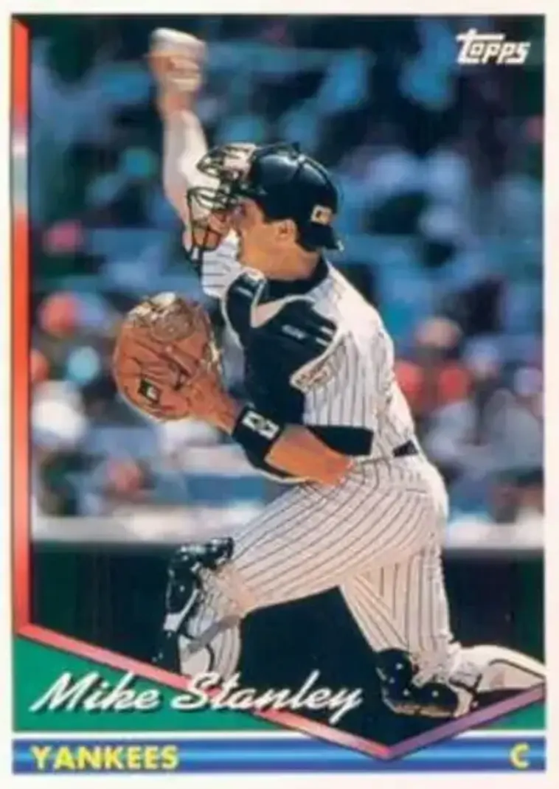

Mike Stanley
Career Highlights & Facts
(Facts are AI-generated and may require verification)
- Primary defensive role involved wearing the tools of ignorance behind the plate.
- Achieved a career-high 4.8 WAR during a single campaign.
- Recorded 187 career home runs while maintaining a .370 on-base percentage.
Would you like to find out more about Mike Stanley?
This article is assigned to
Lance Levine
Full Name
Robert Michael Stanley
Born
June 25, 1963 at Fort Lauderdale, FL (USA)
Stats
Baseball Reference
Retrosheet
Robert Michael Stanley is an American former college and professional baseball player who was a catcher in Major League Baseball for fifteen years. Stanley played college baseball for the University of Florida, and thereafter, he played professionally with the Texas Rangers (1986–1991), New York Yankees, Boston Red Sox, Toronto Blue Jays (1998) and Oakland Athletics (2000).
Career Totals
| WAR | AB | H | HR | BA | R | RBI | SB | OBP | SLG | OPS | OPS+ |
|---|---|---|---|---|---|---|---|---|---|---|---|
| 20.9 | 4222 | 1138 | 187 | .270 | 625 | 702 | 13 | .370 | .458 | .827 | 117 |
Statistics via Baseball-Reference.com
The Original Clue